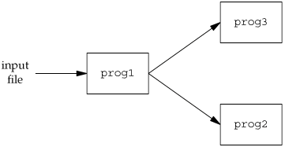
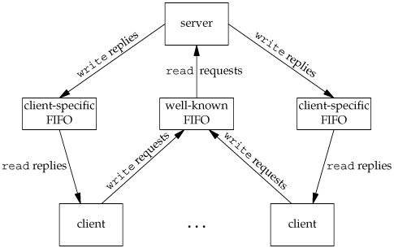

15.5. FIFOsFIFOs are sometimes called named pipes. Pipes can be used only between related processes when a common ancestor has created the pipe. (An exception to this is mounted STREAMS-based pipes, which we discuss in Section 17.2.2.) With FIFOs, however, unrelated processes can exchange data. We saw in Chapter 4 that a FIFO is a type of file. One of the encodings of the st_mode member of the stat structure (Section 4.2) indicates that a file is a FIFO. We can test for this with the S_ISFIFO macro. Creating a FIFO is similar to creating a file. Indeed, the pathname for a FIFO exists in the file system.
The specification of the mode argument for the mkfifo function is the same as for the open function (Section 3.3). The rules for the user and group ownership of the new FIFO are the same as we described in Section 4.6. Once we have used mkfifo to create a FIFO, we open it using open. Indeed, the normal file I/O functions (close, read, write, unlink, etc.) all work with FIFOs.
When we open a FIFO, the nonblocking flag (O_NONBLOCK) affects what happens.
As with a pipe, if we write to a FIFO that no process has open for reading, the signal SIGPIPE is generated. When the last writer for a FIFO closes the FIFO, an end of file is generated for the reader of the FIFO. It is common to have multiple writers for a given FIFO. This means that we have to worry about atomic writes if we don't want the writes from multiple processes to be interleaved. (We'll see a way around this problem in Section 17.2.2.) As with pipes, the constant PIPE_BUF specifies the maximum amount of data that can be written atomically to a FIFO. There are two uses for FIFOs.
We discuss each of these uses with an example. ExampleUsing FIFOs to Duplicate Output StreamsFIFOs can be used to duplicate an output stream in a series of shell commands. This prevents writing the data to an intermediate disk file (similar to using pipes to avoid intermediate disk files). But whereas pipes can be used only for linear connections between processes, a FIFO has a name, so it can be used for nonlinear connections. Consider a procedure that needs to process a filtered input stream twice. Figure 15.20 shows this arrangement. With a FIFO and the UNIX program tee(1), we can accomplish this procedure without using a temporary file. (The tee program copies its standard input to both its standard output and to the file named on its command line.) mkfifo fifo1 prog3 < fifo1 & prog1 < infile | tee fifo1 | prog2 We create the FIFO and then start prog3 in the background, reading from the FIFO. We then start prog1 and use tee to send its input to both the FIFO and prog2. Figure 15.21 shows the process arrangement. Figure 15.20. Procedure that processes a filtered input stream twice Figure 15.21. Using a FIFO and tee to send a stream to two different processes
ExampleClientServer Communication Using a FIFOAnother use for FIFOs is to send data between a client and a server. If we have a server that is contacted by numerous clients, each client can write its request to a well-known FIFO that the server creates. (By "well-known" we mean that the pathname of the FIFO is known to all the clients that need to contact the server.) Figure 15.22 shows this arrangement. Since there are multiple writers for the FIFO, the requests sent by the clients to the server need to be less than PIPE_BUF bytes in size. This prevents any interleaving of the client writes. The problem in using FIFOs for this type of clientserver communication is how to send replies back from the server to each client. A single FIFO can't be used, as the clients would never know when to read their response versus responses for other clients. One solution is for each client to send its process ID with the request. The server then creates a unique FIFO for each client, using a pathname based on the client's process ID. For example, the server can create a FIFO with the name /tmp/serv1.XXXXX, where XXXXX is replaced with the client's process ID. Figure 15.23 shows this arrangement. This arrangement works, although it is impossible for the server to tell whether a client crashes. This causes the client-specific FIFOs to be left in the file system. The server also must catch SIGPIPE, since it's possible for a client to send a request and terminate before reading the response, leaving the client-specific FIFO with one writer (the server) and no reader. We'll see a more elegant approach to this problem when we discuss mounted STREAMS-based pipes and connld in Section 17.2.2. With the arrangement shown in Figure 15.23, if the server opens its well-known FIFO read-only (since it only reads from it) each time the number of clients goes from 1 to 0, the server will read an end of file on the FIFO. To prevent the server from having to handle this case, a common trick is just to have the server open its well-known FIFO for readwrite. (See Exercise 15.10.) Figure 15.22. Clients sending requests to a server using a FIFO
Figure 15.23. Clientserver communication using FIFOs |